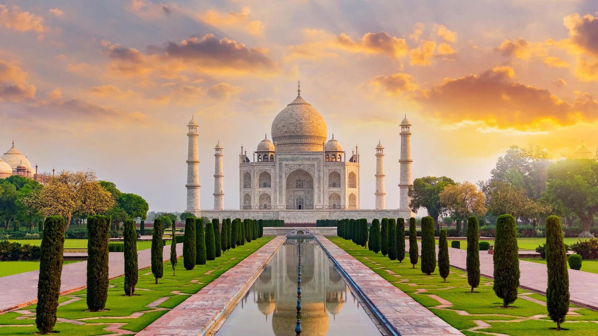

Commissioned in 1632 by the Mughal emperor Shah Jahan to house the tomb of his favorite wife, this ivory-white marble mausoleum is widely considered the finest example of Mughal architecture and a universal symbol of eternal love.